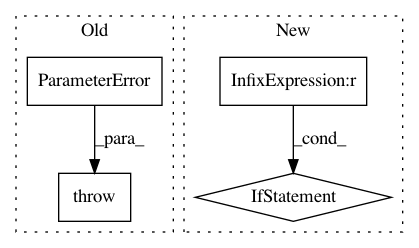

b2e82574eb7e7292741ece09ec9eb286e9ea4168,librosa/util/utils.py,,frame,#,35
Before Change
if axis == -1:
if not x.flags["F_CONTIGUOUS"]:
raise ParameterError("Input array must be F-contiguous "
"for framing along axis={}".format(axis))
shape = list(x.shape)[:-1] + [frame_length, n_frames]
strides = list(strides) + [hop_length * new_stride]
After Change
if hop_length < 1:
raise ParameterError("Invalid hop_length: {:d}".format(hop_length))
if axis == -1 and not x.flags["F_CONTIGUOUS"]:
warnings.warn("librosa.util.frame called with axis={} "
"on a non-contiguous input. This will result in a copy.".format(axis))
x = np.asfortranarray(x)
elif axis == 0 and not x.flags["C_CONTIGUOUS"]:
warnings.warn("librosa.util.frame called with axis={} "
"on a non-contiguous input. This will result in a copy.".format(axis))
x = np.ascontiguousarray(x)
n_frames = 1 + (x.shape[axis] - frame_length) // hop_length
strides = np.asarray(x.strides)
new_stride = np.prod(strides[strides > 0] // x.itemsize) * x.itemsize
In pattern: SUPERPATTERN
Frequency: 3
Non-data size: 4
Instances
Project Name: librosa/librosa
Commit Name: b2e82574eb7e7292741ece09ec9eb286e9ea4168
Time: 2020-05-22
Author: bmcfee@users.noreply.github.com
File Name: librosa/util/utils.py
Class Name:
Method Name: frame
Project Name: librosa/librosa
Commit Name: cfff799d604ea57385ea2c0e49d6ed9662a38a17
Time: 2015-07-01
Author: ebattenberg@gmail.com
File Name: librosa/core/constantq.py
Class Name:
Method Name: cqt
Project Name: librosa/librosa
Commit Name: d9f36b1c8bb77f6829c51987ce310831730623ba
Time: 2019-12-27
Author: kogito@hotmail.fr
File Name: librosa/feature/inverse.py
Class Name:
Method Name: mfcc_to_mel